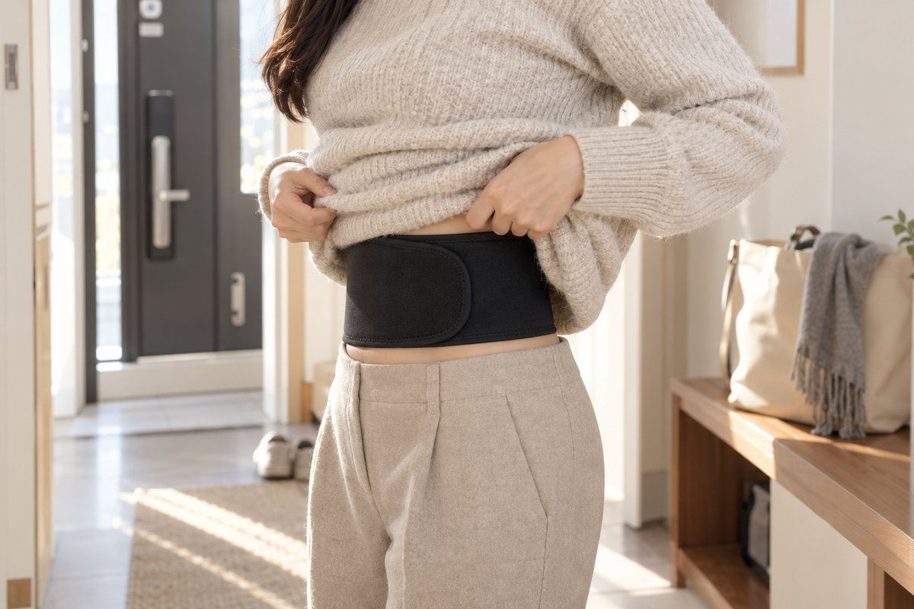
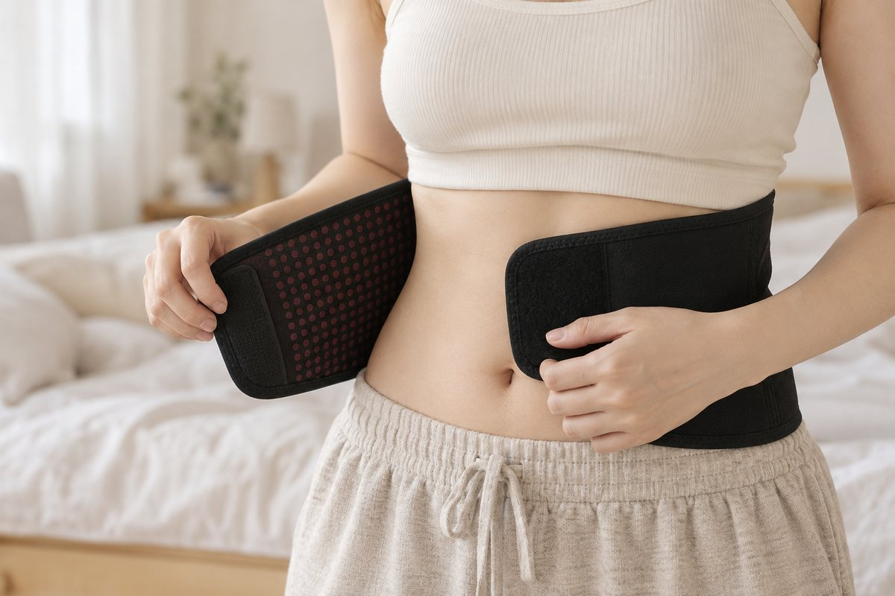
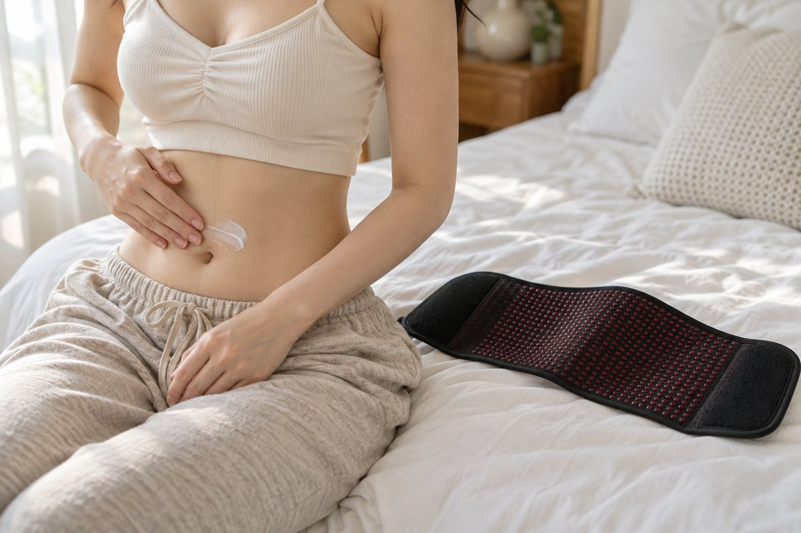
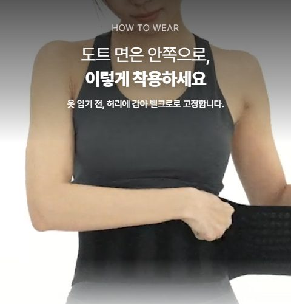

MUST READ
두른 직후

전원이 없는 밴드라 '켜지는 순간'이 없습니다. 필요해지기 전에 미리 둘러 두세요.
두르고 지내는 동안
몸이 어디서 출발하느냐에 따라 느끼는 시점이 달라요. 똑같이 10만큼 따뜻해져도, 몸이 많이 찬 분은 이제 막 '보통'에 닿은 거라 덜 느껴질 수 있어요.
몸이 덜 찬 분 0 → 10 · 올라간 만큼 그대로 느껴져서 변화가 바로 눈에 띄어요.
몸이 많이 찬 분 -10 → 0 · 똑같이 10만큼 올라도 이제 막 '보통'에 닿은 거라 덜 느껴질 수 있어요.
느낌이 늦어도 조급해하지 마세요. 가장 중요한 건 꾸준함이에요.
착용 중 불편할 때


몸이 따뜻해지는 과정에서 나타날 수 있는 느낌과, 바로 풀어야 하는 경우가 있어요.
이런 느낌이라면 · 나타날 수 있어요
잠시 쉬었다 다시 착용하면 점차 줄어드는 경우가 많아요.
이런 경우라면 · 바로 풀어 주세요
착용을 멈추고 고객센터 1577-1857로 문의해 주세요.
벗은 뒤
브랜드 안내에 따르면, 벗은 뒤 샤워나 운동을 할 때 따뜻함을 다시 느끼는 경우가 있습니다. 느끼지 못하는 분도 있으며, 지속 시간을 보장하지 않습니다.
체감 시점과 정도는 개인마다 다르며, 제품의 효과를 보장하지 않습니다.
